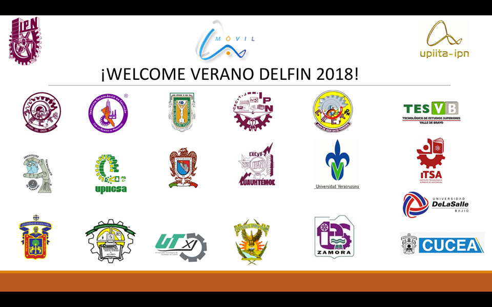
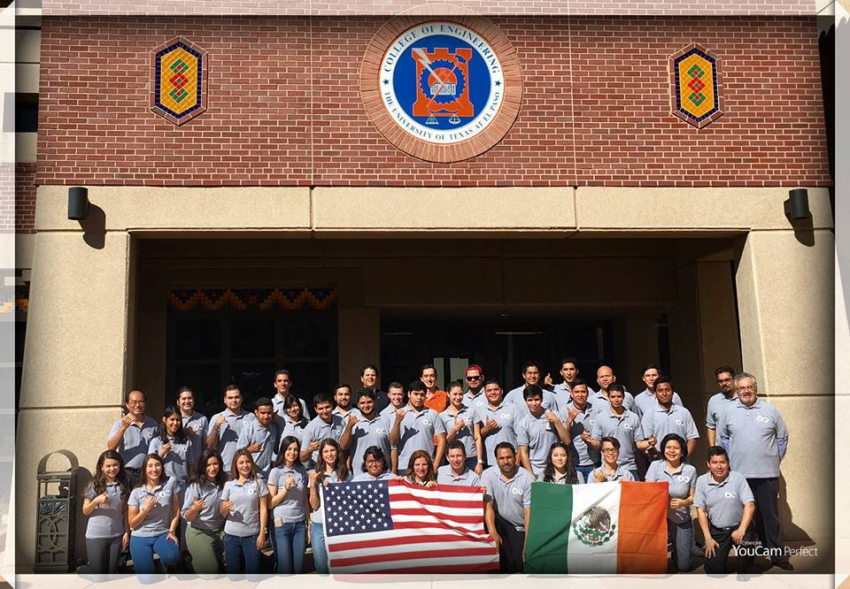

Instituto
Politécnico Nacional
[June 2018 - August 2018]
Data Science & Machine Learning
Bootcamp.
Research about Data Science tools and technologies.
|Big Data tools| |Tableau| |R & Python| |Rapid Miner| |Machine Learning algorithms|.

University of Texas
at El Paso
Smart Cities Summer School (US - MX)
[May 2017 - June 2017]
Brief description:
Summer research for solving problems in cities from México and U,S having help from researchers and ibm workers.

Enlace oficial: https://www.utep.edu/newsfeed/campus/Smart-Cities-Grant-Fosters-International-Collaborations.html